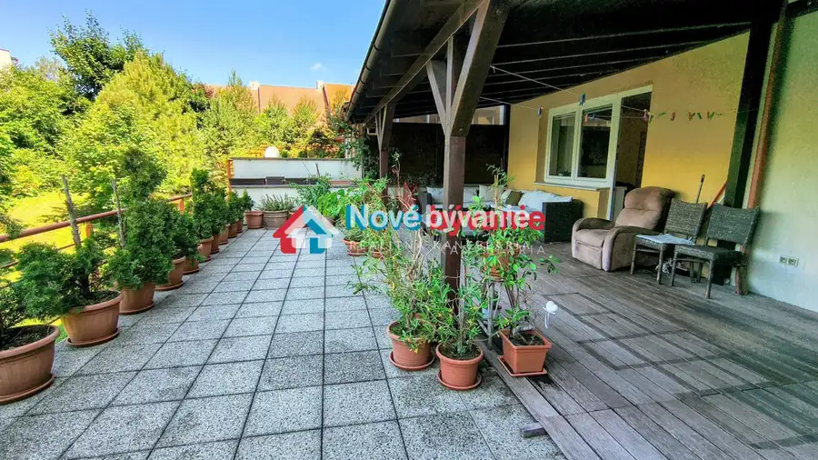
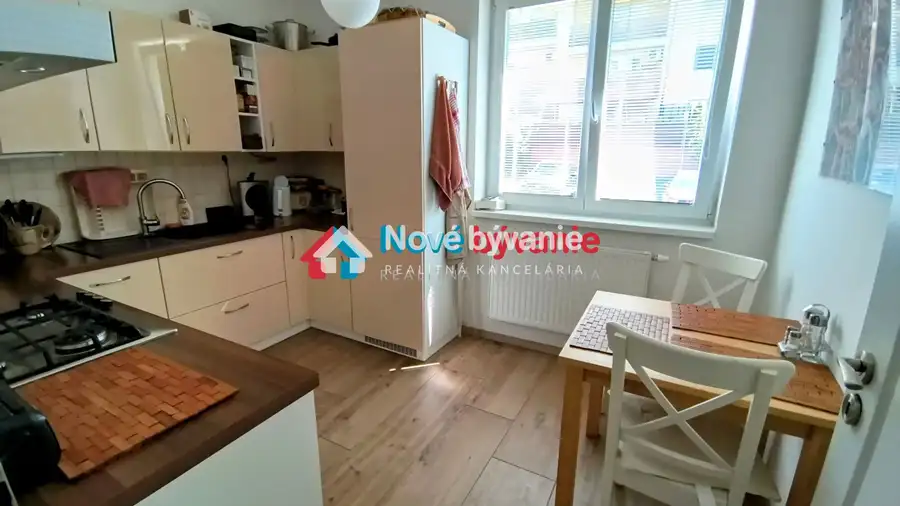
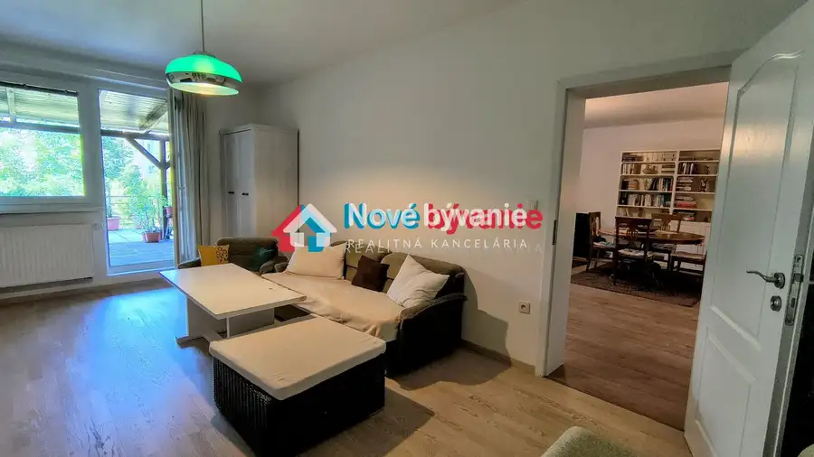
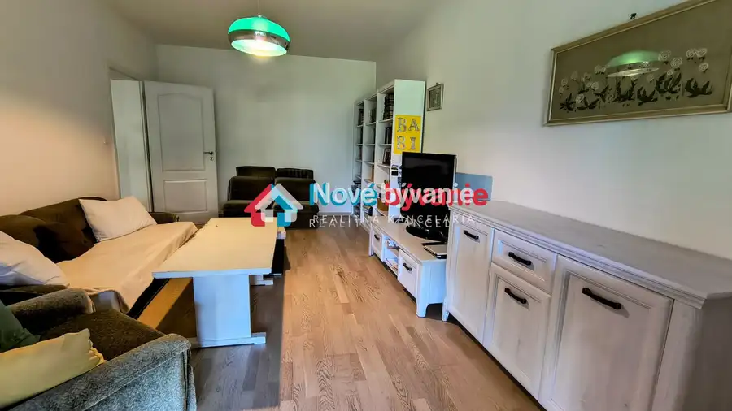
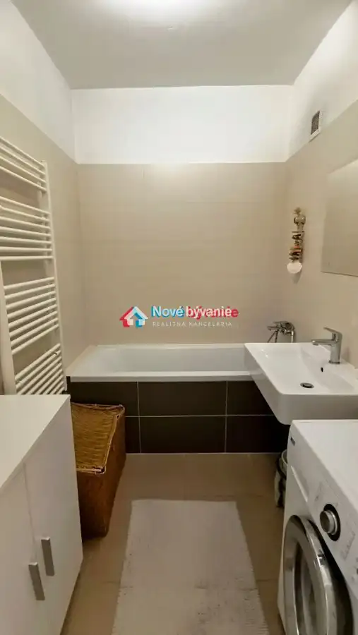
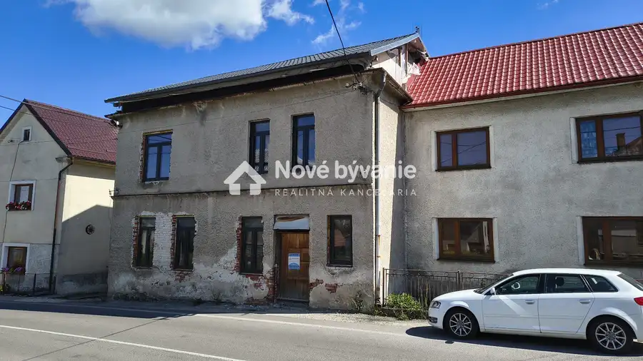
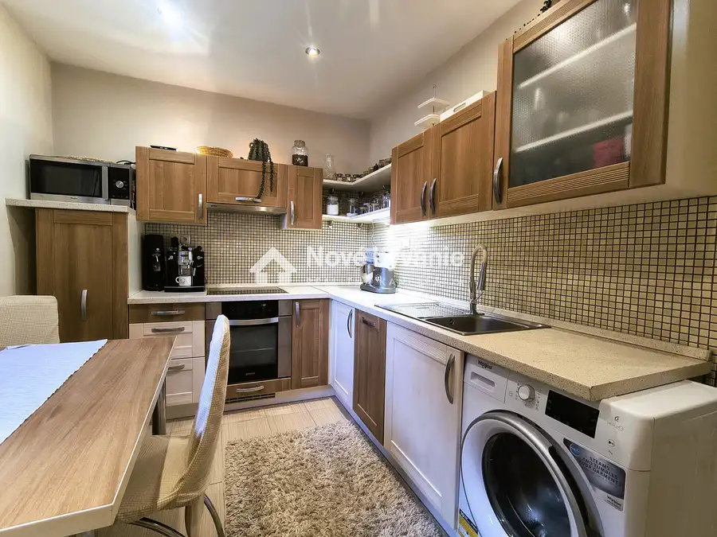
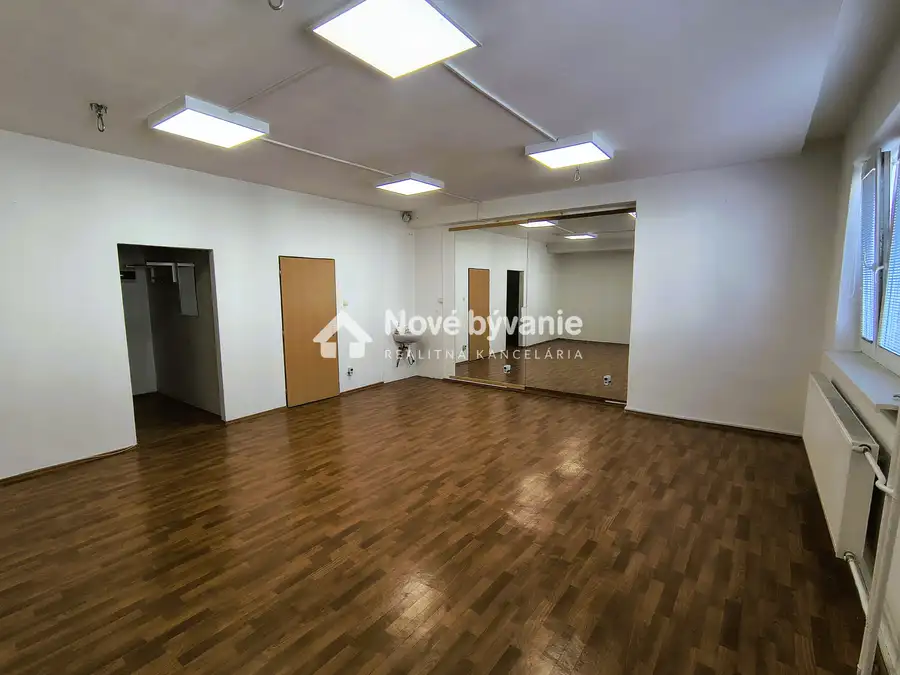

Na predaj 3izb veľký byt s terasou Zobor - Nitra (N031-113-BP)
Nitra





- Dispozícia3-izbový
- Plocha149 m²
- Poschodie1. z 4
- StavKompletná rekonštrukcia
- VlastníctvoOsobné
O nehnuteľnosti
Na predaj: Nádherný veľký 3-izbový byt s obrovskou terasou – Jelenecká, Nitra – ZoborBývanie ako v rodinnom dome | 92 m² interiér + 57 m² terasaHľadáte výnimočné bývanie v pokojnej a prestížnej lokalite pod Zoborom? Ponúkame na predaj priestranný 3-izbový byt s rozlohou 92 m² s exkluzívnou terasu o výmere 57 m² v obľúbenej časti Nitry – Jelenecká ulica, Zobor.Dispozícia a možnosti úprav:Veľká obývačka s možnosťou spojenia s kuchyňou – možnosť jednoducho prerobiť na 4-izbový byt2 samostatné spálne (v jednej z nich vstup na terasu)Kuchyňa (oddelená, s možnosťou integrácie do obývačky)Kúpeľňa a samostatné WCObrovská terasa (9,6 m široká, hĺbka cca 3,5 m s prekrytím z masívu) – ideálna na relax, grilovanie či rodinné posedeniaInteriér:Podlahy:Masívne drevené podlahy QuickStep v 2 izbáchLuxusná talianska keramická dlažba v ostatných miestnostiachPriestranné izby, kvalitné materiály, vysoký štandardVstup na terasu z obývačky aj veľkej spálneByt sa nachádza na vyvýšenom prízemí – ideálne spojenie dostupnosti a súkromiaLokalita:Tichá a zelená časť ZoboraVýborná dostupnosť do centra Nitry aj na diaľnicu R1V blízkosti príroda, lesy, turistické chodníky – ideálne pre aktívny životný štýlKompletná občianska vybavenosť: škôlka, potraviny, zastávka MHDℹ️ Doplňujúce info:Bez garáže (možnosť parkovania pred domom)Možnosť okamžitého nasťahovaniaVhodné aj ako investícia – lukratívna lokalita s vysokým dopytomTel.: 0908 064 839 Ing. PeťovskýKontakt: petovsky@novebyvaniereality.skObhliadky možné po dohode – neváhajte nás kontaktovať!
Parametre
- Cena vrátane energií
- Nie
- Druh
- 3 izbový byt
- Dátum zverejnenia
- 03. 09. 2025
- Podlažie
- 1
- Počet izieb / miestností
- 3
- Počet nadzemných podlaží
- 4
- Stav nehnuteľnosti
- Kompletná rekonštrukcia
- Typ
- Predaj
- Vlastníctvo
- Osobné
- Vybavenie
- Terasa
- Vykurovanie
- Lokálne
- Úžitková plocha
- 149 m²
Kde to je


Mohlo by Vás zaujímať

DomNové 69 000 €Na predaj objekt v centre Hornej Štubne pripojený na IS (025-12-BP) Horná Štubňa 300 m²
BytNové 193 000 €Na predaj 3izb byt Párovská ul. 2x Balkón (N038-113-BP) Nitra 3-izbový1. podlažie
Komerčné priestoryNové Cena na vyžádáníPrenájom kancelárie/ambulancie v centre mesta (B037-25-BP) Nitra 50 m²